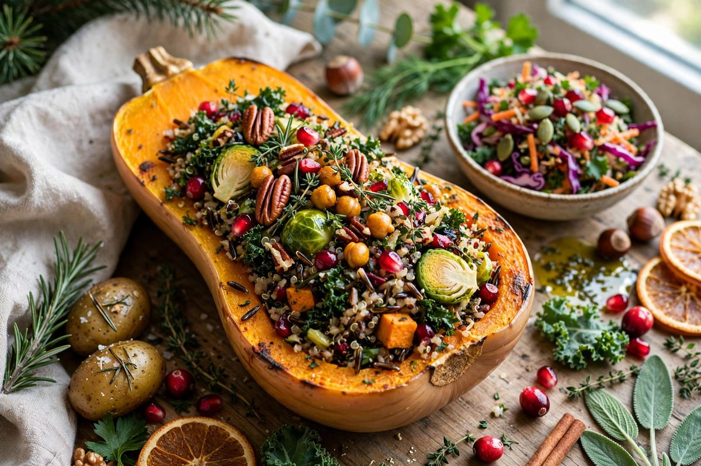

Home » Guides
Vegan Holiday Recipes

Holidays are about food, family, and tradition, and a vegan holiday table can be just as festive and generous as any other. With a good centrepiece, rich sides, and a proper dessert, nobody at the table will feel they are missing out. This guide shares recipes and tips for Christmas, Thanksgiving, and any celebration meal.
A festive centrepiece
Every holiday table needs a centrepiece, and vegan options are plentiful. A whole roasted cauliflower with a spiced glaze looks impressive and tastes wonderful. A lentil and mushroom Wellington, wrapped in puff pastry, is rich and celebratory. A stuffed squash, filled with wild rice, cranberries, and pecans, is beautiful and seasonal. A nut roast, made from mixed nuts, breadcrumbs, and herbs, is the traditional vegan Christmas main. Choose one that suits your cooking time and your guests, and make it the star of the table.
Sides and trimmings
Sides are where a holiday meal becomes generous. Roast potatoes cooked in olive oil until crisp, glazed carrots with maple syrup, Brussels sprouts with chestnuts, and braised red cabbage with apple are all naturally vegan or easy to adapt. A rich mushroom gravy, made from mushrooms, onion, and vegetable stock, ties the plate together. Cranberry sauce, stuffing made with bread and herbs, and a fresh salad add colour and contrast. Make the sides plentiful, so even guests who eat meat will fill their plates with them.
Desserts and baking
Holiday desserts are easy to make vegan. A Christmas pudding can be made with dried fruit, breadcrumbs, and plant-based suet, and it keeps for weeks. Mince pies with vegan pastry are a classic, and a chocolate yule log made with a sponge and ganache is impressive. For Thanksgiving, a pumpkin pie with a cashew cream filling is a favourite, and an apple pie with vegan pastry is simple and delicious. Bake a few days ahead where you can, so the day itself is relaxed.
Hosting and enjoying the day
If you are hosting, tell guests in advance that the meal is vegan, and make sure there is plenty of food — a generous table reassures everyone. If you are a guest at a non-vegan meal, offer to bring a dish, so you know there is something for you and you can share it with others. Do not make the meal a debate about diet; let the food speak for itself. Holidays are about being together, and a table full of good food, vegan or not, is the best way to celebrate.
Planning a vegan holiday meal
Planning a holiday meal starts weeks in advance. Choose your centrepiece first, then plan the sides, the dessert, and the drinks around it. Make a shopping list and buy non-perishable items early, so the last few days are calm. Cook what you can ahead — sauces, desserts, and baked goods all keep well — and leave only the final cooking for the day itself. Write a timetable for the day, working backwards from serving time, so everything is ready together. Ask for help: a holiday meal is a shared effort, and guests are usually happy to bring a dish. A calm cook makes a good meal, and a little planning is the best way to stay calm.
Frequently Asked Questions
What can I serve as a vegan Christmas main?
A nut roast, a mushroom Wellington, a stuffed squash, or a whole roasted cauliflower. All are festive, filling, and impressive on the table.
Can I make vegan gravy?
Yes. Simmer mushrooms, onion, and garlic in vegetable stock, thicken with a little flour or cornflour, and season with soy sauce for a rich, savoury gravy.
How do I handle a non-vegan family holiday?
Offer to bring a vegan dish to share, eat what you can from the table, and focus on the company rather than the food. A calm, generous approach works best.